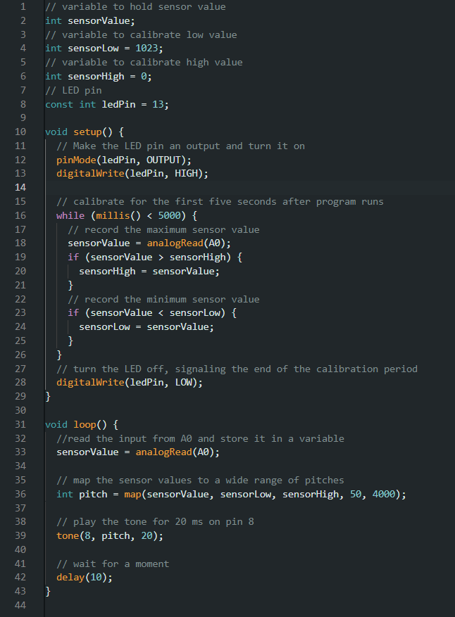

Arduino HW 6 - Light Theremin
IGME 470
The Light Theremin assignment is the first time I have used sound through the Arduino. It was a simple project, using a photoresistor to control the pitch of a piezo speaker. The more light that hits the photoresistor, the higher the pitch.
Overall, this project was a great way to learn about using sound with the Arduino and how to use analog inputs to control outputs.


Above is the code and the wiring for the assignment built in Tinkercad. It was actually very simple, with the only parts being:
- 1x Phototransistor
- 1x Piezo Speaker
- 1x 10kΩ Resistor
The code uses the embedded LED on the Arduino Uno to give feedback that it is calibrating the light sensor, and then loops, mapping the sensor's values to a range of 50 - 4000, playing that output as a pitch on the Piezo Speaker.